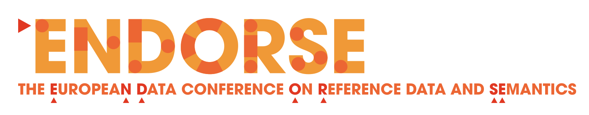
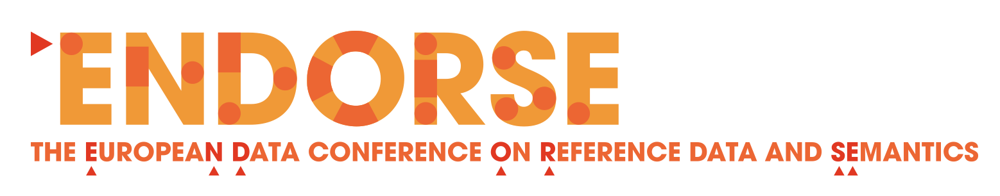

EDCC Knowledge Base
Morten Espelund
Dennis Diefenbach
@ Endorse
14th March 2023


 


- Service = answer questions about the EU and its policies
-
- for European and non-European citizens
- in 26 languages
- phone, webform, instant messaging (New)
- Objectives
-
- Provide high-quality service
- Inform about the EU/EU policies
- Understand citizens' concerns
- Operation
-
- Since 2000
- Outsourced
- 204 475 messages in 2022
The problem
- Suboptimal knowledge transfer between:
-
- framework contractors
- framework contractors and the European Commission
- EDCC staff members
Solution: EDCC KB
KB Aggregates

Authored Content

Websites

Reference replies
To answer Messages

In sync with the CRM (5 min)
Spam detection
NLP pipeline for every incoming message
- Detect the language
- Compute the english translation (if it is not english) EC Translation
- Compute the sentiment
- Compute the class of the message (200 classes)
Every message is RDF-ized
Answer to questions via language model
Conclusion
We have shown:
- What is the content/use of the EDCC KB
- How the knowledge in EDCC is integrated in a Knowledge Graph and combined with AI techniques
- How the KB is used to answer to questions.
Acknowledgements:
- DG COMM
- DGIT
- ESN
- Connectys
Thank you! Questions?